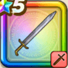

魔剣士の片手剣
攻略班 6.0点 / メタル斬りぶんまわし魔王炎斬
くわしい特徴
【レベル別習得スキル】 Lv10メタル斬り（消費MP：6）メタルボディを切り裂く一撃で、メタル系に斬撃ダメージを与える Lv20ぶんまわし（消費MP：9）振りまわした剣で、敵全体に威力120%の斬撃ダメージを与える Lv30魔王炎斬（消費MP：31）敵1体に威力260%のメラ属性斬撃ダメージを与える Lv40????系へのダメージ+3% Lv45デスピサロへのダメージ+3% Lv50攻撃力+5 【限界突破スキル】 1凸魔王炎斬のダメージ+5% 2凸魔王炎斬のダメージ+5% 3凸魔王炎斬のダメージ+10% 4凸魔王炎斬のダメージ+20%